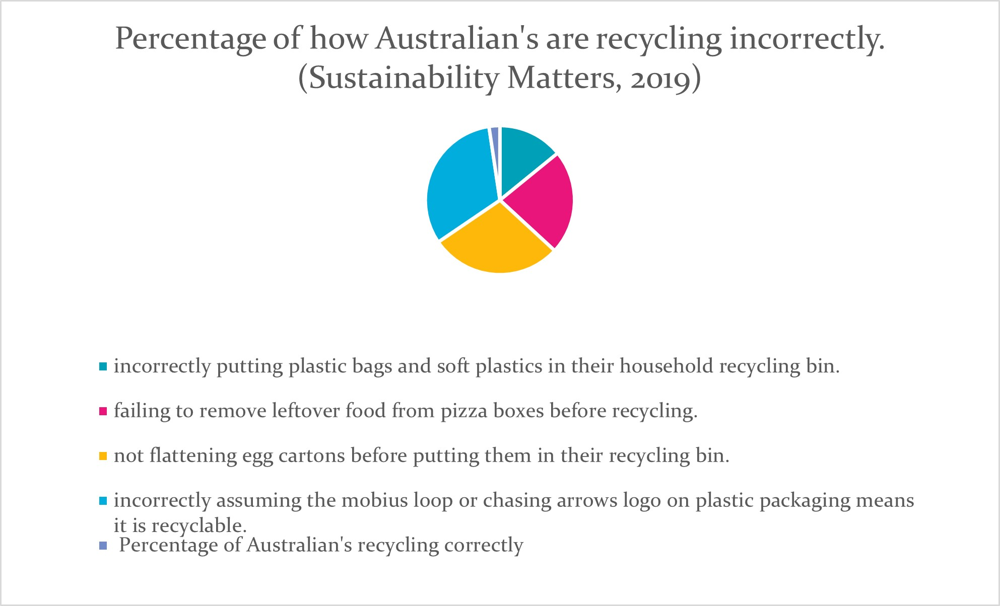

This IT project will be to educate children and families in understanding how to recycle, but we want to design it in the easiest possible way for families to get all the information they need in one app. Finding research on how to recycle can be daunting and difficult to find online our app will do this for the user, so all the information you need will be in one place instead of having to do long hours of research on many different websites to achieve an understanding how to recycle.
Motivation
This app is going to be exciting and useful for many different reasons, having all the following information in one app will allow the user to go to one section and find all the information they need on recycling. The team will do research and source the following information for the app.
How does not recycling affect us. Understanding this will make the world aware of why recycling is so important and why people should learn more.
The importance of recycling. Does society know the importance of recycling? If society understands more about recycling, they will develop a passion for doing it. This will encourage users to be more invested in learning more and getting the app more screen time. Other apps are lacking in this information.
Climate change and landfills education.
All of the above is going to draw in users as they will now understand why this app is good to use, how users will be bettering the earth and our atmosphere by using the app once designed. In the beginning
Description
The following subjects will be put on the app with their own access points, with the following information in them.
Climate change: this section will have definitions of what it is, what causes it, and how recycling will affect it positively.
Landfills: definition of what landfill is, what landfill does to our planet, what recycling does to benefit our landfills and earth. With real-life images of landfill sites.
Recycling Tips: Resources for recycling tips. For example,
Don’t put recycling in plastic bags
Remove all food and liquid from containers
Lids and labels can stay on
Give plastic items the ‘scrunch test’
Give cardboard items the ‘tear test’
Ignore the plastics identification number. (City of Sydney, n.d)
What can go into your yellow bin: City of Darwin, Whichbin.sa.gov.au, City of Monash, City of Hobert, City of South Perth, City of Sydney, Queensland Government these websites also have recycling detail and council contact details this could help with getting the resource information from the professionals for correct recycling. Which then can be used to categories and have a search bar for items to be easily found.
What can go in the green bins: same as above.
How to compost: Instruction on how to compost. Written by Maddison Davis.
Get a lidded plastic bin, select a safe place in the backyard to keep it. To avoid rodents, you can bury the bottom part of your bin.
Fill your compost bin with dry items e.g., paper, cardboard, green items e.g., grass, leaves, and food scraps. You will need more dry items than green.
Compost will need to be watered if dry.
Turn compost over every now and then and keep adding items until the compost is full enough to use.
Recycling Guides: this section is a chart or easy-to-read diagrams for children to read to learn how to recycle. It will be printable so parents can print them out and put them on the fridge. Once getting the resource of what people can and can’t recycle, it will be possible to use Canva to design and build our own. We can source feedback from an early childhood employee to ensure our charts are kid-friendly and helpful.
To help parents with the mundane task of rubbish this application will also include a reward system for kids, when a certain item has been but into the recycle bin or compost a star value or virtual coin will be given as a reward, this gives children am incentive to get involved while also gaining knowledge in the practice of recycling.
Application Layout
The application layout will start with.
The application layout will start with a drop-down menu asking what you are recycling, with multiple options; once selected, the user will proceed with the following question: Is the item inside a plastic bag? If selected yes, the app will ask to discard the plastic bag; if no has been chosen, it will proceed to Question 3, which will then ask if the item is free from food or liquids; if yes, it will ask if the product is plastic or cardboard, then that will define whether a scrunch test or tear test is necessary with a tutorial on these tests, guiding the user through the process to make a non-recyclable item, a recyclable. To which on the final screen, there will be advice on the possibilities for the product, whether it is a yellow bin, red bin, personal compost, or if there is a local facility close to the user’s current location. With links to their own council’s policy and procedures regarding recycling.
With all of the above, the app should also be appealing to the eye, especially for kids: so bright colours, easy simple language, easy to navigate, and pictures for visual learning.
Tools and Technologies
By using an app creator such as the MIT app it will assist in building the recycling app.
MIT app inventor allows group work, our collaboration system is mainly designed for group course projects of 2-4 students in middle school, high school, or college. The system will satisfy the following features:
Users are identified by their email address and share projects with others by email address. The user who creates the project can change others’ access levels of the project. The access level includes read, in which users can only view the project, and write, in which users can both view and edit the project. ‘Enabling Multi-User Computational Thinking with Collaborative Blocks’ (Deng & Patton, 2017, p.2)
Pros: Open-ended learning supports creativity, plus students can get apps running on a phone or tablet in only a few minutes.
Cons: The tools are powerful and could be overwhelming to younger students; more classroom materials would be nice. (Common Sense Education,2017, heading pros, cons)
Another available app developer is Figma the pros of Figma are,
Figma allows users to create a team with one account inside its website.
As students can get access to all of the professional features for free. (Figma 2020)
Cons:
No internet no Figma
Colours are limited on the app
‘Figma will not run on a system that has got below 4GB of RAM and a Graphics Card of high quality.’ (Berezhnoi 2020)
Before starting our app development, it would be an idea for each team to familiarise themselves with the app inventors and watch tutorials on how to use the system.
The idea of the game for kids will be, recyclable and non-recyclable items that will appear on your screen, one at a time, you then will have to throw the item with a flick-like motion on your touch screen device to get it into the correct bin. If you are incorrect, it will indicate this the more bits of trash you get into the correct bin the more point you gain. High scores will be recorded and displayed on a dashboard for children to see.
This game is different from other games on the app store like ‘Hyper Recycle’, ‘Grow Recycle’ and ‘Recycling Moo’. Due to the fact, it is not a drag and drop system and you don’t drive a truck around picking your garbage in the area.
The children’s game could be designed by any of the following game development systems, they are all free to use, I have added the following features for comparison to what is available to use and their features.
Construct 3
GameMaker Studio 2
Unity
Defold
No programming is needed. Construct 3 is the best game development software to use if you've never written a line of code in your life. This game development tool is completely GUI-driven, meaning everything is drag-and-drop. Game logic and variables are implemented using the design features provided by the app itself.
Drag-and-drop or code. Like Construct 3, GameMaker Studio 2 allows you to create entire games using nothing more than its drag-and-drop interface for variables and game logic. But unlike Construct 3, GameMaker Studio 2 grants more power through its Game Maker Language, which is a C-like scripting language with a lot of flexibility.
Unity started as a 3D engine in 2005 and eventually added official 2D support in 2013. Perfect for creating games of all shapes and sizes from mobile 2D casual games to jaw-dropping graphical masterpieces.
Drag-and-drop or code. Use Defold's code editor to add custom logic or the visual and scene editors to drop assets straight into your game. Compatible with GitHub.
(Mears. M, 2022)
Skills required
The skills required for the project would be to understand how to use either of the app creators or game development systems and to look at watching tutorial videos on how to use their website. Being able to research and source information for the app itself about recycling, climate change, composting, without copyright, and understand how to reference properly. To have a creative mindset to make the app appealing to the users using it and develop the recycling charts for children. To complete the app/game, you will need a computer and a smartphone to test out the progress of the app/game, access to the internet is a must as well.
Outcome
STILL NEEDS TO BE ADDED IN MATTHEW'S PART
New research highlights a staggering 94% of Australians are making recycling mistakes despite 60% being extremely confident in their recycling habits. (Sustainability Matters, 2019)
It doesn’t make economic sense to send recyclable materials to landfills. State landfill levies provide a financial incentive to recycle, ranging from $33 to $141 per tonne in VIC, WA, SA, QLD, and NSW, which means it may cost more to dump waste in landfills. (Planet Ark Council Survey, 2019)
With the development of this app, we could help support the government in their plans to reshape the recycling strategies of Australia, by guiding society with recycling correctly using the recycling app.
We’re aiming to reduce total waste generated in Australia by 10% per person and achieve an 80% average recovery rate from all waste streams by 2030. Australia’s on track to invest over $800 million in new infrastructure to sort, process, and remanufacture materials such as plastic, paper, tyres, and glass. We’re working with all states and territories and with industry to create 10,000 new jobs and divert 10 million tonnes of waste from going to landfills. (Australian Government, 2021)

Future Product & Business Development
PRODUCT FEATURES
Furthering the app’s information to include every Australian region’s specific recycling requirements, as each government area differs. With this feature comes location tracking to provide the correct data to users (a manual selection is available as well).
The addition of an in-app game designed to teach children how to recycle correctly. More detail is given on this in another section.
Inclusion of the resources required for the “Teacher Subscription” service outlined under commercialisation. Parallel to this product is the release of a feature where teachers/individuals can book and organise an in-person presentation for a school or team.
Adding customisable avatars and points shop for avatar items, with points being gained by recycling correctly. This avatar will be shareable and integrated with social media platforms where possible.
COMMERCIALISATION
Selling collected QR code scan data to third parties for tracking market trends, product demand, recycling trends per area, etc. This will assist in funding the continued development and awareness of the app.
A paid “Teacher Subscription” service, where there is more in-depth information alongside age-specific teaching aids (graphics outlining recycling practices, songs about recycling, external research resources, getting the class involved in recycling).
Paid presentations and activity days at childcare centres, signing up centres to paid services regarding recycling practices. These presentations may also be
COMMUNITY OUTREACH & EDUCATION
Government-funded presentations and talks on recycling at schools, signing up the schools, teachers, and students (where age-appropriate) to the app. Comparable to the very successful Healthy Harold and Stop Wasting Water campaigns.
Sponsorships and partnerships with organisations such as Clean Up Australia and The Ocean Cleanup to spread awareness of our product, as well as onboarding volunteers to use the app in an event-specific way. This may include - tracking how much and what an individual personally cleans up, estimating total clean-up weights to compare to different areas/teams in a competition-style format, registering teams, and tracking locations to be able to stick within your clean-up group and area.
General public awareness campaigns, government-funded where possible. These may include ads about recycling, charts/resources sent to houses, sticker aids added onto household bins, more engaging and in-depth signage in public areas where there are council bins.
government funded however most childcares are privately owned and may not be covered.
Paid consultations with companies about industrial recycling practices.